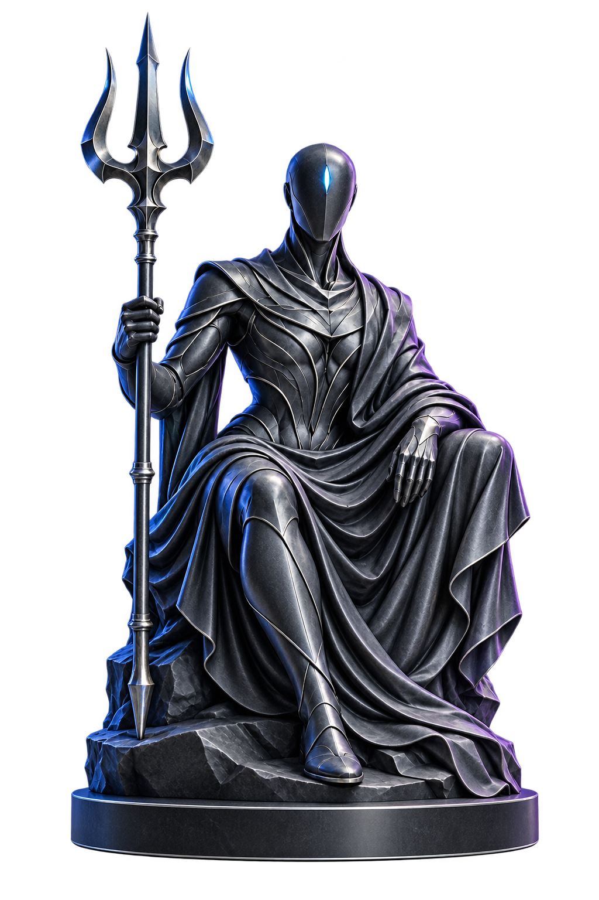

GET/products200
POST/ordersFlagged
GET/health200
Evidence attachedTRN-014
Read between
the requests.
Turns shadow traffic into a finding, with an endpoint, evidence, and a clear explanation of the weakness.
An AI defense layer that diverts suspicious traffic into a shadow environment—and turns what it observes into reviewed fixes.

Keep the real application in view. Give flagged sessions a shadow copy to explore—and your defense a place to learn.
From a suspicious request to a proposed remedy. Explore how each role carries the evidence forward.
Turns shadow traffic into a finding, with an endpoint, evidence, and a clear explanation of the weakness.
def create_order(data):− qty = data.get("qty")+ qty = data.get("qty", 1)+ if qty < 1:+ return invalid_input() return save_order(qty)Reads source inside a bounded fork and proposes a focused change to existing files. The patch waits for review.
Examines correctness, scope, and safety. A patch can move forward—or return to the fixer with specific feedback.
The detector examines shadow request metadata and records a finding with evidence, severity, and an affected endpoint.
Evidence. A focused change. A review decision.
See the whole story without losing the details.
A finding, with its whole journey in view.
The proposed change is being checked for correctness, scope, and safety.
def create_order(data):
− qty = data.get("qty")
+ qty = data.get("qty", 1)
+ if type(qty) is not int or qty < 1:
+ return invalid_input("Check quantity")
return save_order(qty)An interactive look at the workspace direction. Sample activity, no live system connected.
The path from evidence to application deserves care. TriNetra puts boundaries around the work.
The fixer proposes changes within the configured source fork, with existing-file restrictions by default.
Static scans and a separate review stage examine proposed changes for selected risks and scope.
Hot reload for the Python demo. Recorded operator-run rebuild commands for compiled services.
A gateway in front. A shadow copy alongside. A workflow that turns observations into proposed changes.
Start with the bundled demo. Explore the integration path for your application.
Curiosity is part of good defense.
A separate copy of the application that receives sessions flagged by the gateway. Its request logs give the detector evidence to analyze while the production application remains a separate environment.
No. TriNetra is a defensive system. It recognizes, logs, diverts, and analyzes suspicious activity, then proposes patches. The traffic illustration on this page is an inert visual demo.
In the Python demo, approved files are copied into the deployed application for hot reload. In rebuild mode, the approved patch is written to the fork and a rebuild command is recorded for an operator to run.
Yes. The runtime has an optional human-approval setting that holds model-approved patches for an operator. The repository’s demo defaults to hands-off operation.
The embedded illustration on this page uses sample data. Open the workspace to inspect findings, proposed patches, sessions, and activity from your running TriNetra stack. If the application is not connected, the workspace offers a clearly labeled sample mode.
Three AI agents. One considered defense.
A clearer path from signal to fix.